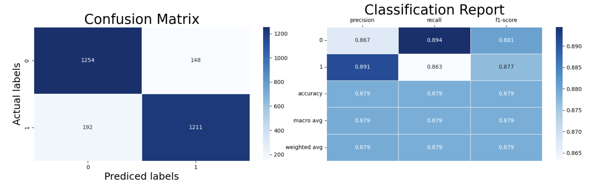

Information
Algorithms Used :
1. Logistic Regression :
Provided a simple and interpretable baseline model, offering a quick understanding of the relationships between features and the target variable.
2. Support Vector Machines :
Was effective in handling the high-dimensional feature space, particularly after hyperparameter tuning via GridSearchCV, and showed good performance on the dataset.
3. Decision Tree :
Offered easy interpretability but was prone to overfitting. However, it helped in understanding the data and visualizing feature importance.
4. Random Forest :
Improved upon the Decision Tree by reducing overfitting through ensemble learning, resulting in a more robust model with better generalization to unseen data.
5. XGBoost / Gradient Boosting :
Demonstrated strong performance with its gradient boosting framework, particularly excelling in handling complex patterns within the data and offering high accuracy after hyperparameter optimization.
6. Final Accuracy Table :